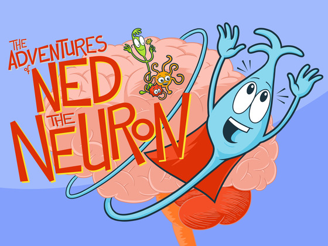

THE POWER OF Q - Jonah Lehrer
Chapter 6 from Imagine
The Origin of ideas Ideas
"The source of every new idea is the same. There is a network of neurons in the brain, and then the network shifts."
Sum of its parts
"The whole is greater than sum of its parts" - Aristotle
- some groups are just a few items thrown together
- this does not apply to people's creativity
- some groups are more than a sum of its parts
- teamwork in scientific papers and patents has increased in 99% of them
- science papers created by multiple authors are more cited
What is Q?
The amount of Q relates to social intimacy.
- high Q (>3.2)
- low Q (<1.4)
- ideal Q (3.2>q>1.4)

Teamwork
"A mediocre team will screw up a good idea. But if you give a mediocre idea to a great team and let them work together, they'll find a way to succeed."
Right place to work
- gathering spots are 'third places'
- 10x more likely to communicate with someone in close proximity
- high-performance workers engage in more conversations
- floating-desk decreases communication as people don't know where others sit
Brainstorming
- brainstorming is the most creative technique of all time
- criticism is censored
- freewheeling associations are encouraged
- if people are scared to say wrong things, they won't say nothing at all
Brainstorming doesn't work
- solo people come up with 2x more ideas
- more feasible ideas
- more effective ideas
- brainstorming outperforms "no-idea" groups but is far outperformed by discussion groups
- people aren't very good at free-associating
Criticism
"Criticism is something you can easily avoid by saying nothing, doing nothing and being nothing" - Aristotle
- leads to more new ideas
- encourage to engage with the work
- inventive to think about someone else's work
- imagination is stretched by things you didn't expect
You need those weird fucks
- talent is not enough, it fails every day
- most of their work will be thrown away
- their weirdness will be contagious
Education paradigms - Ken Robinson
- meeting future by doing what they did in the past
- current system was designed for industrial revolution
- intellectual model - academic and non-academic people
- schools are organized like factory lines
- standardized testing
Divergent thinking
- capacity to creativity
- see multiple answers instead of one
- kindergarten children - 98% genius
- 8-10 years old - 32%
- 13-15 years old - 10%
- 25+ - 2%
Brain damage
- one answer
- judge separately
- grouped by age
- organized by subject
- don't copy, don't collaborate
- extra lessons in what you're bad at